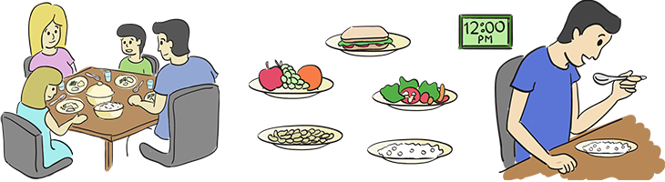
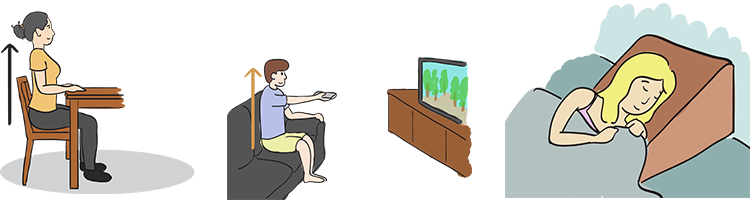

Module: Dysphagia and the Digestive Tract
Janet L. Poole, PhD, OTR/L, and Cindy Mendelson, PhD, RN, and Dinesh Khanna, MD, MS
Although you may be prescribed medications (discussed later in this module) to help manage your dysphagia and reflux, there are several things you can do to reduce the symptoms.
Management of dry mouth
Many people with scleroderma have a dry mouth. A dry mouth is caused by a smaller amount of saliva. Not only does saliva help with swallowing and digestion, but it also helps clean your teeth. Decreased saliva in scleroderma can lead to tooth decay.
- Brush your teeth regularly (see the module on Mouth and Teeth Care).
- Because having a smaller amount of saliva can lead to tooth decay, brushing your teeth is important to prevent cavities and problems with the gums (bleeding).
- Having healthy teeth will let you eat and chew the foods you need to for good health and will help to manage your dysphagia.
- Have regular dental check-ups (see the module on Mouth and Teeth Care).
- Preventive dental care is important so your teeth will stay healthy.
- Drinking plenty of water, sucking on ice chips, and chewing sugarless gum and hard candy may also help keep your mouth moist.
Management of meals
Eating can be challenging when you have dysphagia and reflux. It is important to make sure you get enough nutrition to fuel your body and that you manage food carefully so you don’t choke.

- Eat slowly – give yourself plenty of time to finish meals. Avoid situations where you are going to feel rushed.
- Eat small, frequent meals (5-6 meals/day) – distribute your protein and other nutrients across the day.
- Eat your biggest meal of the day at noon.
- Wear loose-fitting clothes.
- Sit in the correct position while eating (discussed later in this module).
Do
- Eat high-bulk foods (fruits, vegetables, and cereal grains).
- Eat small bites of food, and chew foods well.
- Make sure that food is moist.
- Eat foods that are thoroughly cooked because they can be more easily be broken down with very little chewing.
- Think about adding liquid meal replacements, like Ensure, to your diet to add extra vitamins and nutrients, or as your main source of nutrition (after talking with a nutritionist).
- Eat foods that are warmer or cooler than room temperature (it helps your throat know where they are and reduces choking).
- Add thickener to liquids because you are more likely to choke on thin liquids.
- Drink water or other fluids between bites to help food go down.
- Consider using a blender to puree foods such as meat and vegetables that can be hard to swallow.
Don't
- Eat late at night (i.e., do not eat or drink 2 hours before bedtime).
- Eat spicy foods (you may have to learn by trial and error which foods cause more problems for you).
- Eat milk and milk products.
- Eat foods high in sugar.
- Eat blended foods with chunks (i.e., yogurt with fruit pieces).
- Eat sticky foods.
- Eat foods at room temperature.
- Drink thin liquids.
Safe and effective swallowing
There are some things you can do to increase your safety and comfort during a meal.
Sitting in the correct position is very important to promote effective and safe swallowing:

- Always eat while sitting up straight – this allows gravity to assist in swallowing and reduces the chances of choking.
- Sit up straight after meals – this also helps food move into your stomach and reduces reflux.
- Raise the head of your bed 6 to 8 inches (using a wedge pillow, blocks under the head of the bed, or an electric bed that can be raised), which also helps prevent reflux while you are sleeping.
You can also take actions to increase the effectiveness and safety of chewing and swallowing:
- Chew each mouthful of food thoroughly.
- Swallow at least three times before taking more food.
- Alternate between food and liquids.
- Periodically clear your throat or cough lightly while eating to move trapped food into the center of your esophagus for swallowing.
- Give yourself plenty of time to eat.